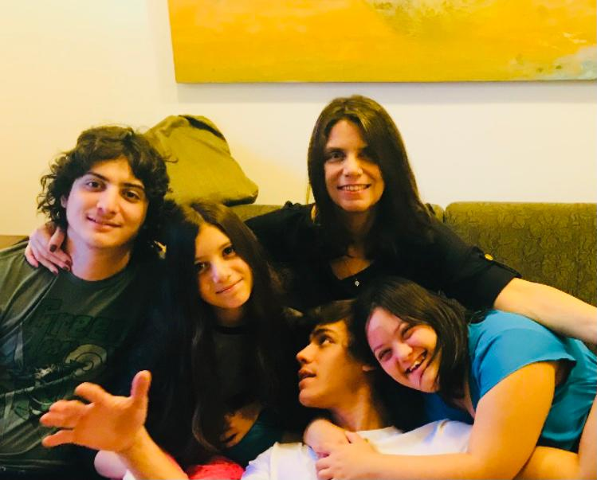
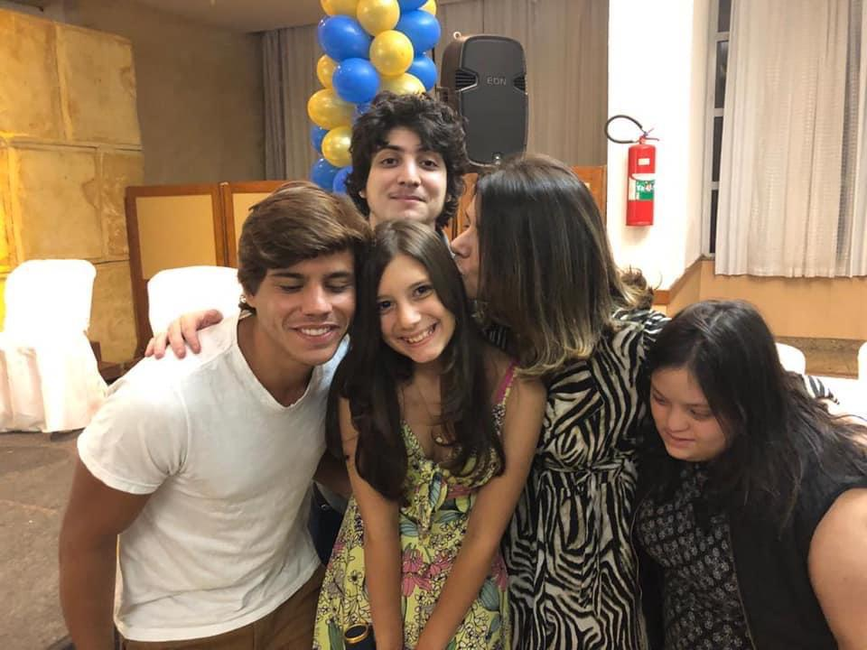
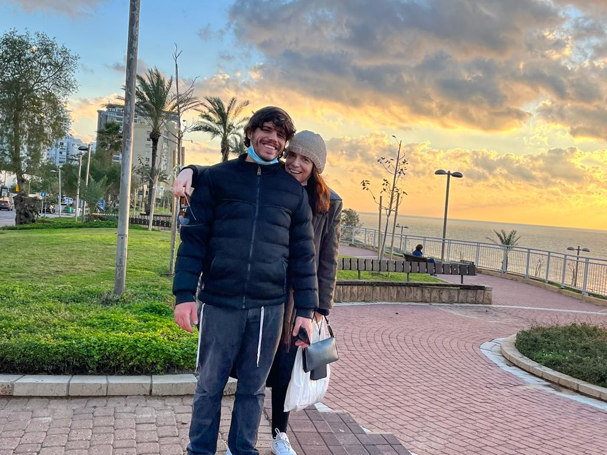
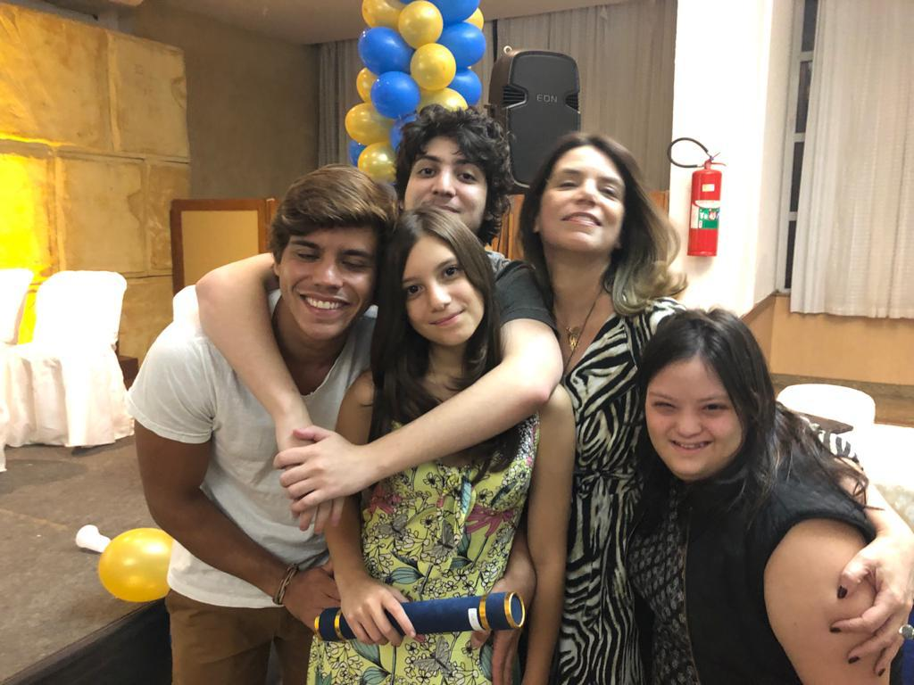
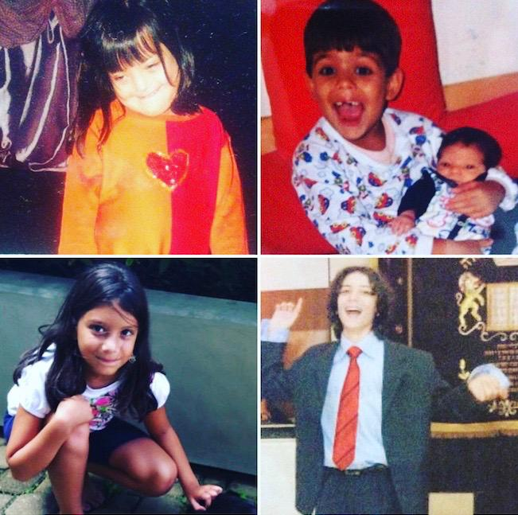
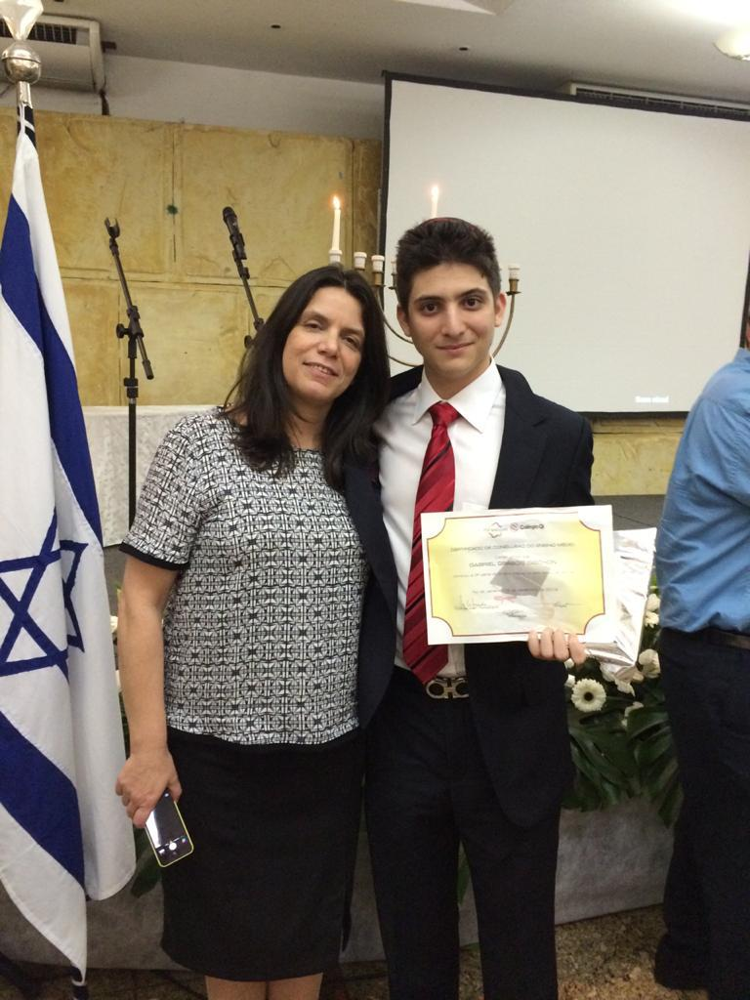
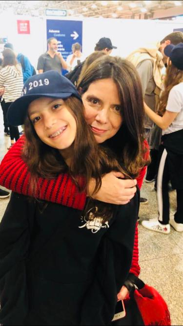
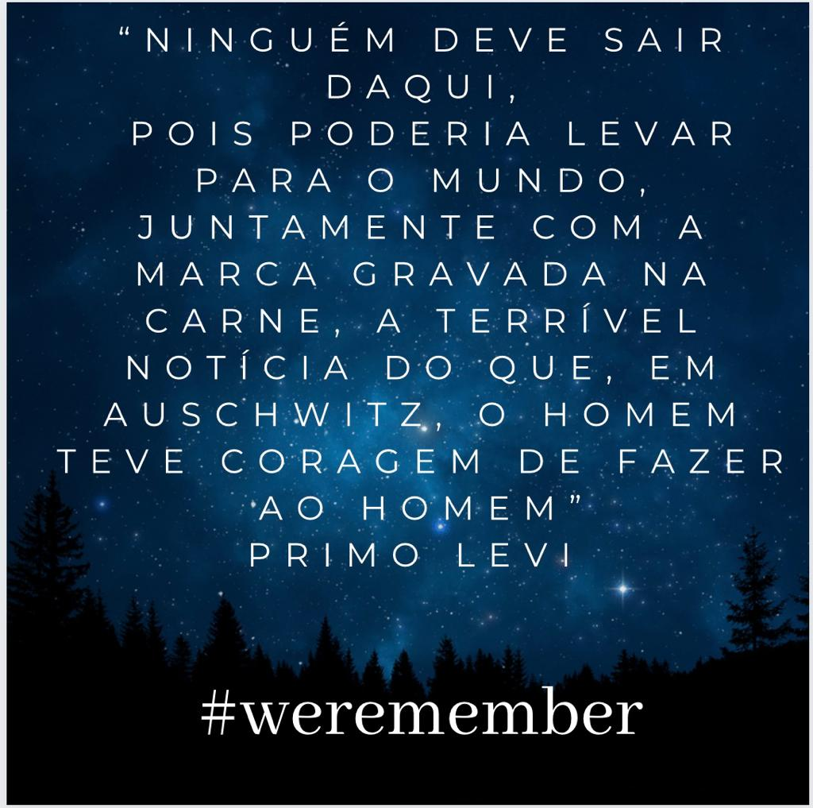

Lawyer & Activist
Born in 1965 and raised in a small city in the south of Brazil, Claudia Grabois embarked on a journey of activism that would shape her life and career. In 1979, during Brazil's dictatorship era, she began her activist endeavors by joining human rights movements, determined to fight for justice and equality.

In 1982, Claudia's path led her to Israel for a transformative year, where upon her return to Brazil in 1983, she expanded her activism to include Zionism and the fight against anti-Semitism. Embracing diversity and inclusion, she also pursued her law studies at UERJ, the esteemed law school of Rio de Janeiro State University.
In 1988, Claudia completed her law degree with exceptional scores, establishing her roots in Rio and actively engaging in various political parties that aligned with her activist principles. Despite differences within these parties, Claudia persisted in her quest for impact, while simultaneously building her career as a lawyer.
From 1992 to 2004, Claudia temporarily stepped away from activism and law to focus on nurturing her family and pursue opportunities in commerce. During this period, she married and dedicated herself to the upbringing of her children while achieving financial stability.
In 2004, Claudia returned to her law career and reignited her activism. Joining the Jewish Agency in Rio de Janeiro in 2005 as a coordinator of the Eitan project, she collaborated with Zionist Jewish youth groups, emphasizing non-formal education.
In 2006, Claudia emerged as a prominent figure in advocating for the ratification and implementation of the Convention on the Rights of Persons with Disabilities in Brazil. She assumed the role of director at FIERJ in 2007, and actively contributed to a technical commission in the Rio municipality focused on combating homophobia.
In 2008, Claudia Grabois ascended to the role of President of FBSD (Federacao Brasilera das associacoes de sindrome de down), solidifying her dedication to inclusive education and advocacy. As a visionary leader, she actively engaged in the development of legislation proposals, becoming a national reference in the field of inclusive education. Claudia's unwavering commitment to creating a society that values and embraces diversity has left an indelible mark on the path towards a more inclusive and compassionate world.
In 2009, Claudia became the manager of special education in the Rio municipality, dedicating her efforts to promoting social inclusion among students and training hundreds of school managers in the challenges of inclusive education. Throughout this time, she remained an active participant in the Jewish community.
By 2011, Claudia transitioned out of public administration, prioritizing her law career and specializing in international family law. Her dedication to prioritizing the best interests of children in court decisions earned her national recognition. She served as a consultant for Brazil's Ministry of Education and became a coordinator for the Inclusive Network of Human Rights.
In 2012, Claudia co-created the National Forum for Inclusive Education and began representing the Barese Institute, Brazil's primary federation for rare diseases, as a lawyer. Her commitment to fighting homophobia continued in 2014 through her participation in a technical commission in the Rio municipality.
In 2015, Claudia actively contributed to the plan against religious intolerance in the Rio municipality and assumed the presidency of the Commission for People with Disabilities at IBDFam, the Brazilian Institute of Family Law. In 2017, she stepped down as a director at FIERJ to solely focus on her law career.
Finally, in 2021, Claudia fulfilled one of her lifelong dreams and made aliyah, embracing a new chapter in her life. Her tireless dedication to activism, coupled with her legal expertise, has made her an influential force in championing the rights of marginalized communities and fostering social inclusion. Claudia Grabois's journey exemplifies a life enriched by a commitment to making a difference, and her unwavering passion for justice and equality continues to inspire others to this day.
Mother
In this heartfelt tribute to Claudia Grabois, we pay homage not only to her exceptional achievements but, more importantly, to the profound meaning she finds in motherhood. Claudia's role as a mother has been the cornerstone of her life, shaping her values, guiding her decisions, and inspiring her every step of the way. Her unwavering love, selflessness, and unwavering dedication to her children have been a constant source of strength and joy. As a mother, Claudia has nurtured her children's dreams, instilling in them a passion for life and a belief in their own abilities. Through countless sleepless nights, tender embraces, and unending support, she has shown them the power of unconditional love and the beauty of selfless sacrifice. Her role as a mother is not merely a title but a sacred bond that has shaped her identity and brought immeasurable fulfillment to her life.
      Poetry Lover
In the realm of poetry, Claudia finds solace, inspiration, and a profound connection to the human experience. It is within these verses, crafted in various languages, that she discovers the essence of life's meaning and the profound impact words can have on our souls. Each poem featured in this section has been carefully chosen to reflect Claudia's spirit and her enduring love for the written art form.
Out of the night that covers me, Black as the pit from pole to pole, I thank whatever gods may be For my unconquerable soul.
In the fell clutch of circumstance I have not winced nor cried aloud. Under the bludgeonings of chance My head is bloody, but unbowed.
Beyond this place of wrath and tears Looms but the Horror of the shade, And yet the menace of the years Finds and shall find me unafraid.
It matters not how strait the gate, How charged with punishments the scroll, I am the master of my fate, I am the captain of my soul.
Invictus By William Ernest Henley
Minha terra tem palmeiras Onde canta o Sabiá, As aves, que aqui gorjeiam, Não gorjeiam como lá.
Nosso céu tem mais estrelas, Nossas várzeas têm mais flores, Nossos bosques têm mais vida, Nossa vida mais amores.
Em cismar, sozinho, à noite, Mais prazer encontro eu lá; Minha terra tem palmeiras, Onde canta o Sabiá.
Minha terra tem primores, Que tais não encontro eu cá; Em cismar - sozinho, à noite - Mais prazer encontro eu lá; Minha terra tem palmeiras, Onde canta o Sabiá.
Não permita Deus que eu morra, Sem que eu volte para lá; Sem que desfrute os primores Que não encontro por cá; Sem qu'inda aviste as palmeiras, Onde canta o Sabiá.
Canção do exílio By Gonçalves Dias
עוֹד לֹא אָבְדָה תִּקְוָתֵנוּ הַתִּקְוָה הַנּוֹשָׁנָה מִשּׁוּב לְאֶרֶץ אֲבוֹתֵינוּ לְעִיר בָּהּ דָּוִד חָנָה.
כָּל עוֹד בִּלְבָבוֹ שָׁם פְּנִימָה נֶפֶשׁ יְהוּדִי הוֹמִיָּה וּלְפַאֲתֵי מִזְרָח קָדִימָה עֵינוֹ לְצִיּוֹן צוֹפִיָּה.
כָּל עוֹד דְּמָעוֹת מֵעֵינֵינוּ תֵּרֵדְנָה כְּגֶשֶׁם נְדָבוֹת וּרְבָבוֹת מִבְּנֵי עַמֵּנוּ עוֹד הוֹלְכִים לְקִבְרֵי־אָבוֹת.
כָּל עוֹד חוֹמַת־מַחְמַדֵּינוּ עוֹד לְעֵינֵינוּ מֵיפַעַת וַעֲלֵי חֻרְבַּן מִקְדָּשֵׁנוּ עַיִן אַחַת עוֹד דּוֹמַעַת.
כָּל עוֹד הַיַּרְדֵּן בְּגָאוֹן מְלֹא גְּדוֹתָיו יִזֹלוּ וּלְיָם כִּנֶּרֶת בְּשָׁאוֹן בְּקוֹל הֲמֻלָּה יִפֹּלוּן.
כָּל עוֹד שָׁם עֲלֵי דְּרָכַיִם שָׁם שַׁעַר יֻכַּת שְׁאִיָּה וּבֵין חָרְבוֹת יְרוּשָׁלַיִם עוֹד בַּת־צִיּוֹן בּוֹכִיָּה.
כָּל עוֹד שָׁמָּה דְּמָעוֹת טְהוֹרוֹת מֵעֵין־עַמִּי נוֹזְלוֹת לִבְכּוֹת לְצִיּוֹן בְּרֹאש אַשְׁמוֹרוֹת יָקוּם בַּחֲצִי הַלֵּילוֹת.
כָּל עוֹד רֶגֶשׁ אַהֲבַת־הַלְּאֹם בְּלֵב הַיְּהוּדִי פּוֹעֵם עוֹד נוּכַל קַוֵּה גַּם הַיּוֹם כִּי יְרַחֲמֵנוּ אֵל זוֹעֵם.
שִׁמְעוּ אַחַי בְּאַרְצוֹת נוּדִי אֶת קוֹל אַחַד חוֹזֵינוּ "כִּי רַק עִם אַחֲרוֹן הַיְּהוּדִי גַּם אַחֲרִית תִּקְוָתֵנוּ".
Tikvatenu By Naftali Herz Imber
In the tapestry of life, a soul does shine, With grace and strength, your spirit intertwine. From humble beginnings, you've soared high above, A guiding star, fueled by boundless love.
A warrior for justice, your voice resounds, In every battle, your passion astounds. Activism's flame, forever aglow, You've kindled hope where darkness would grow.
As a mother, your love knows no measure, Nurturing hearts with boundless treasure. Your children's dreams, you've helped them ignite, With unwavering support, day and night.
In courtrooms, you stand, a beacon of might, Championing truth, with unwavering sight. Through law and order, you seek to mend, A world where fairness shall always ascend.
With each step you take, on this path you tread, A trailblazer, where justice is fed. Claudia, your legacy, it will endure, A testament to love, passion, and pure.
So, here's to you, dear Claudia, so bright, A shining example, in love's pure light. May this tribute reflect the love we send, To an extraordinary soul, our dear friend.
Claudia, A Beacon of Light By ChatGPT 3.5
Queda prohibido llorar sin aprender, levantarte un día sin saber qué hacer, tener miedo a tus recuerdos…
Queda prohibido no sonreír a los problemas, no luchar por lo que quieres, abandonarlo todo por miedo, no convertir en realidad tus sueños….
Queda prohibido no intentar comprender a las personas, pensar que sus vidas valen menos que la tuya, no saber que cada uno tiene su camino y su dicha…
Queda prohibido no crear tu historia, no tener un momento para la gente que te necesita, no comprender que lo que la vida te da, también te lo quita…
Queda prohibido no buscar tu felicidad, no vivir tu vida con una actitud positiva, no pensar en que podemos ser mejores, no sentir que sin ti, este mundo no sería igual…